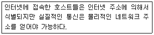
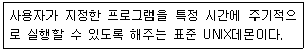
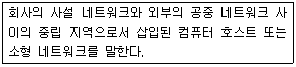
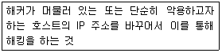

인터넷보안전문가-2급 (2004-02-29 기출문제)
1과목: 정보보호개론
1. 네트워크상의 부당한 피해라고 볼 수 없는 것은?
- 침입자가 부당한 방법으로 호스트의 패스워드 정보를 입수한 후 유용한 정보를 가져가는 경우
- 특정인이나 특정 단체가 고의로 호스트에 대량의 패킷을 흘려 보내 호스트를 마비시키거나 패킷 루프와 같은 상태가 되게 하는 경우
- 특정인이나 특정 단체가 네트워크상의 흐르는 데이터 패킷을 가로채 내거나 다른 불법 패킷으로 바꾸어 보내는 경우
- HTTP 프로토콜을 이용하여 호스트의 80번 포트로 접근하여 HTML 문서의 헤더 정보를 가져오는 경우
(정답률: 알수없음)

2. 공개키 암호화 방식에 대한 설명이 틀린 것은?
- 대칭키 암호화 방식보다 적은 수의 키로 운영된다.
- 공개키 알고리즘이라고도 한다.
- 대칭키 암호화 방식에 비해 암호화 속도가 느리다.
- 미국의 암호화 표준인 DES가 여기에 속한다.
(정답률: 10%)
3. SEED(128비트 블록 암호 알고리즘)의 특성으로 맞지 않는 것은?
- 데이터 처리단위는 8, 16, 32비트 모두 가능하다.
- 암ㆍ복호화 방식은 공개키 암호화 방식이다.
- 입출력의 크기는 128비트이다.
- 라운드의 수는 16라운드이다.
(정답률: 알수없음)
4. 웹 보안 프로토콜인 S-HTTP(Secure-HTTP)에 관한 설명 중 틀린 것은?
- 클라이언트와 서버에서 행해지는 암호화 동작이 동일하다.
- PEM, PGP 등과 같은 여러 암호 메커니즘에 사용되는 다양한 암호문 형태를 지원한다.
- 클라이언트의 공개키를 요구하지 않으므로 사용자 개인의 공개키를 선언해 놓지 않고 사적인 트랜잭션을 시도할 수 있다.
- S-HTTP를 탑재하지 않은 시스템과 통신이 어렵다.
(정답률: 알수없음)
5. 다음 바이러스 중에서 나머지 셋과 성격이 다른 것은?
- Michelangelo
- Brain
- Laroux
- LBC
(정답률: 알수없음)
6. PICS(Platform for Internet Content Selection)란 인터넷의 웹사이트 내용에 대해서 등급을 정해서 청소년들을 유해한 정보로부터 보호하고자 제안된 표준이다. 이에 관한 설명으로 거리가 먼 것은?
- 외설뿐 만 아니라 폭력적인 장면, 언어에 대한 내용이 포함되어 있다.
- 이미 사용 중인 웹브라우저의 경우 불건전한 사이트에 대해 검색을 할 경우 내용이 보이지 않도록 제어하는 기능이 포함되어 있다.
- 일부 사용자들은 사이버 공간에서의 자유를 주장하며 등급제에 반대했었다.
- 현재 관련 법규에 웹사이트의 모든 내용에 대해 등급을 정해서 제작 하도록 하고 있다.
(정답률: 알수없음)
7. S-HTTP(Secure-HTTP)시스템에 있어서 정보의 무결성과 가장 관계가 깊은 기술은?
- 비밀키 암호화 방식
- 전자 인증서
- 메시지 요약
- 공개키 암호화 방식
(정답률: 알수없음)
8. 전자 서명문 생성 시에 이용되는 인증서에 대한 설명 중 거리가 먼 것은?
- 인증기관이 한번 발행하면 영원히 취소되지 않는다.
- 근본적으로 사용자의 이름과 공개키를 인증기관의 개인키로 서명한 서명문이다.
- 주체 이름은 일반적으로 X.500 DN(Distinguished Name)형식을 갖는다.
- 주체 이름을 대신하는 주체 대체 이름으로 사용자ID, E-mail 주소 및 IP주소, DNS이름 등을 사용한다.
(정답률: 알수없음)
9. 다음 중 유형이 다른 보안 알고리즘은?
- AES 알고리즘
- RSA 알고리즘
- DES 알고리즘
- Diffie-Hellman 알고리즘
(정답률: 알수없음)
10. 인터넷상에서 시스템 보안 문제는 중요한 부분이다. 따라서 보안이 필요한 네트워크 통로를 단일화하여 이 출구를 보완 관리함으로써 외부로부터의 불법적인 접근을 막는 시스템은?
- 해킹
- 펌웨어
- 데이터디들링
- 방화벽
(정답률: 알수없음)
2과목: 운영체제
11. 방화벽에서 내부 사용자들이 외부 FTP에 자료를 전송하는 것을 막고자 한다. 외부 FTP에 Login 은 허용하되, 자료전송만 막으려면 몇 번 포트를 필터링 해야 하는가?
- 23
- 21
- 20
- 25
(정답률: 알수없음)
12. TCP/IP 프로토콜에 관한 설명 중 틀린 것은?
- 데이터 전송 방식을 결정하는 프로토콜로써 TCP와 UDP가 존재한다.
- TCP는 연결지향형 접속 형태를 이루고, UDP는 비 연결형 접속 형태를 이루는 전송 방식이다.
- HTTP는 UDP만을 사용한다.
- IP는 TCP나 UDP형태의 데이터를 인터넷으로 라우팅하기 위한 프로토콜로 볼 수 있다.
(정답률: 알수없음)
13. IGRP(Interior Gateway Routing Protocol)의 특징이 아닌 것은?
- 거리벡터 라우팅 프로토콜이다.
- 메트릭을 결정할 때 고려요소 중 하나는 링크의 대역폭이 있다.
- 네트워크 사이의 라우팅 최적화에 효율적이다.
- 비교적 단순한 네트워크를 위해 개발되었다.
(정답률: 알수없음)
14. TCP/IP 응용 계층 프로토콜에 대한 설명으로 맞는 것은?
- Telnet은 파일 전송 및 접근 프로토콜이다.
- FTP는 사용자 TCP 연결을 설정한 후 다른 서버에 로그인하여 사용할 수 있도록 하는 프로토콜이다.
- MIME는 전자우편 전송 시 영어 이외의 언어나 영상, 음성 등의 멀티미디어 데이터를 취급할 수 있도록 지원하는 프로토콜이다.
- SMTP는 단순한 텍스트형 전자우편을 임의의 사용자로부터 수신만 해주는 프로토콜이다.
(정답률: 알수없음)
15. 각 허브에 연결된 노드가 세그먼트와 같은 효과를 갖도록 해주는 장비로서 트리구조로 연결된 각 노드가 동시에 데이터를 전송할 수 있게 해주며, 규정된 네트워크 속도를 공유하지 않고 각 노드에게 규정 속도를 보장해 줄 수 있는 네트워크 장비는?
- Switching Hub
- Router
- Brouter
- Gateway
(정답률: 50%)
16. ATM에 대한 설명으로 옳은 것은?
- 데이터를 35byte의 셀 또는 패킷으로 나눈다.
- Automatic Transfer Mode의 약자이다.
- 음성, 비디오, 데이터 통신을 동시에 수행 할 수 없다.
- 100Mbps 급 이상의 전송 속도를 나타내는 연결 서비스이다.
(정답률: 알수없음)
17. 디지털신호인코딩(Digital Signal Encoding) 방법이 아닌 것은?
- NRZ(Non Return to Zero)
- Manchester
- PCM(Pulse Code Modulation)
- Differential Manchester
(정답률: 알수없음)
18. 다음과 같은 일을 수행하는 프로토콜은?

- DHCP(Dynamic Host Configuration Protocol)
- IP(Internet Protocol)
- RIP(Routing Information Protocol)
- ARP(Address Resolution Protocol)
(정답률: 알수없음)
19. 다음 중 IPv4에 비하여 IPv6이 개선된 점에 대한 설명 중 거리가 먼 것은?
- 128비트 구조를 가지기 때문에 기존의 32비트보다 더 많은 노드를 가질 수 있다.
- 전역방송(Broad Cast)이 가능하다.
- IPv6에서는 확장이 자유로운 가변길이 변수로 이루어진 옵션 필드 부분 때문에 융통성이 발휘된다.
- IPv6에서는 Loose Routing과 Strict Routing의 두 가지 옵션을 가지고 있다.
(정답률: 알수없음)
20. 전송을 받는 개체에서 발송지에서 오는 데이터의 양이나 속도를 제한하는 프로토콜의 기능은?
- 에러제어
- 순서제어
- 흐름제어
- 접속제어
(정답률: 알수없음)
21. HDLC 프레임의 구조 순서로 옳게 연결된 것은?
- 플래그 시퀀스 - 제어부 - 어드레스부 - 정보부 - 프레임 검사 시퀀스 - 플래그 시퀀스
- 플래그 시퀀스 - 어드레스부 - 정보부 - 제어부 - 프레임 검사 시퀀스 - 플래그 시퀀스
- 플래그 시퀀스 - 어드레스부 - 제어부 - 정보부 - 프레임 검사 시퀀스 - 플래그 시퀀스
- 제어부 - 정보부 - 어드레스부 - 제어부 - 프레임 검사 시퀀스 - 플래그 시퀀스
(정답률: 알수없음)
22. 인터넷에서는 네트워크에 연결된 컴퓨터들을 식별하기 위해 고유한 주소체계인 인터넷 주소를 사용한다. 다음 중 인터넷 주소에 대한 설명으로 바르지 않는 것은?
- 인터넷 IP주소는 네트워크 주소와 호스트주소로 구성된다.
- TCP/IP를 사용하는 네트워크에서 각 IP주소는 유일하다.
- 인터넷 IP주소는 네트워크의 크기에 따라 4개의 클래스로 구분되어 진다.
- 인터넷 IP주소는 64bit로 이루어지며, 보통 16bit씩 4부분으로 나뉜다.
(정답률: 알수없음)
23. Telnet서비스에 대한 설명 중 거리가 먼 것은?
- 일반적으로, 25번 포트를 사용하여 연결이 이루어진다.
- 인터넷 프로토콜 구조로 볼 때 TCP상에서 동작한다.
- 네트워크 가상 터미널 프로토콜이라고 할 수 있다.
- Telnet연결이 이루어지면, 일반적으로 Local Echo는 발생하지 않고 Remote Echo방식으로 동작한다.
(정답률: 알수없음)
24. 네트워크 운영체제(Network Operating System)에 대한 설명 중 틀린 것은?
- 네트워크에 대한 설명서를 온라인으로 제공한다.
- 이용자가 네트워크 호스트에 있는 각종 자원들을 사용할 수 있게 해 준다.
- 특정자원이 적당한 자격을 갖춘 이용자에 의해서만 엑세스되도록 한다.
- Windows 2000 Server의 경우 별도의 NOS를 설치해야만 네트워크 운영이 가능하다.
(정답률: 알수없음)
25. 인터넷 주소의 범위가 192.0.0.0.에서 223.255.255.255 로 끝나는 클래스는?
- 클래스 A
- 클래스 B
- 클래스 C
- 클래스 D
(정답률: 알수없음)
26. 리눅스에서 root 유저로 로그인 한 후 cp /etc/* ~/temp -rf 라는 명령을 내려서 복사를 하였는데, 여기서 ~ 문자가 의미하는 뜻은?
- /home 디렉터리
- 루트(/) 디렉터리
- root 유저의 홈 디렉터리
- 현재 디렉터리의 하위라는 의미
(정답률: 알수없음)
27. /etc/resolv.conf 파일에 적는 내용이 알맞게 나열된 것은?
- 네임서버 주소, 도메인 서픽스(suffix)
- 네임서버 주소, 리눅스 서버 랜카드 IP 주소
- 네임서버 주소, 홈페이지 도메인
- 네임서버 주소, 서버 도메인
(정답률: 알수없음)
28. shutdown -r now 와 같은 효과를 내는 명령은?
- halt
- reboot
- restart
- poweroff
(정답률: 알수없음)
29. 레드햇 계열의 리눅스 시스템에서 처음 부팅시 사용자가 정의해 실행할 명령을 넣는 스크립트 파일의 이름은?
- /usr/bin/X11/startx
- /boot/Systemp.map
- /boo/vmlinuz
- /etc/rc.d/rc.local
(정답률: 알수없음)
30. 리눅스에서 사용하는 에디터 프로그램이 아닌 것은?
- awk
- pico
- vi
- emacs
(정답률: 알수없음)
3과목: 네트워크
31. 다음이 설명하는 데몬은?

- crond
- atd
- gpm
- amd
(정답률: 60%)
32. 리눅스 MySQL 서버를 MySQL 클라이언트 프로그램으로 연결하였다. 새 사용자를 등록하려 하는데, 등록해야하는 데이터베이스이름, 테이블이름, 등록 시 사용하는 쿼리가 알맞게 나열된 것은?
- mysql,user,insert
- sql,host,insert
- mysql,host,insert
- mysql,users,insert
(정답률: 알수없음)
33. 기존의 지정된 PATH 의 맨 마지막에 /usr/local/bin 이라는 경로를 추가하고자 한다. 올바르게 사용된 명령은?
- $PATH=$PATH:/usr/local/bin
- PATH=$PATH:/usr/local/bin
- PATH=PATH:/usr/local/bin
- PATH=/usr/local/bin
(정답률: 알수없음)
34. Windows 2000 Professional에서 어떤 폴더를 네트워크상에 공유시켰을 때 최대 몇 명의 사용자가 공유된 자원을 접근할 수 있는가?
- 무제한 접근가능
- 최대 10명 접근가능
- 최대 50명 접근가능
- 1명
(정답률: 알수없음)
35. Windows 2000 Server에서 제공하고 있는 VPN 프로토콜인 L2TP(Layer Two Tunneling Protocol)에 대한 설명 중 틀린 것은?
- IP 기반의 네트워크에서만 사용가능하다.
- 헤드 압축을 지원한다.
- 터널인증을 지원한다.
- IPsec 알고리즘을 이용하여 암호화 한다.
(정답률: 알수없음)
36. 다음 중 파일 a.c 와 파일 b.c 를 aa.tar.gz으로 압축하여 묶는 명령어는?
- tar cvf aa.tar.gz a.c b.c
- tar zv aa.tar.gz a.c b.c
- tar czvf aa.tar.gz a.c b.c
- tar vf aa.tar.gz a.c b.c
(정답률: 알수없음)
37. 웹사이트가 가지고 있는 도메인을 IP Address로 바꾸어 주는 서버는?
- WINS 서버
- FTP 서버
- DNS 서버
- IIS 서버
(정답률: 알수없음)
38. DHCP범위 (Dynamic Host Configuration Protocol Scope)혹은 주소 풀(Address Pool)을 만드는데 주의할 점에 속하지 않는 것은?
- 모든 DHCP서버는 최소한 하나의 DHCP범위를 반드시 가져야 한다.
- DHCP주소범위에서 정적으로 할당된 주소가 있다면 반드시 해당 주소를 제외해야 한다.
- 네트워크에 여러 DHCP서버를 운영할 경우에는 DHCP범위가 겹치지 않아야 한다.
- 하나의 서브넷에는 여러 개의 DHCP범위가 사용될 수 있다.
(정답률: 알수없음)
39. 다음 중 현재 위치한 디렉터리를 표시해 주는 명령어는?
- mkdir
- pwd
- du
- df
(정답률: 알수없음)
40. 다음 중 Windows 2000 Server에서 사용자 계정에 관한 옵션으로 설정할 수 없는 항목은?
- 로그온 할 수 있는 컴퓨터의 IP주소
- 로그온 시간 제한
- 계정 파기 날짜
- 로그온 할 수 있는 컴퓨터 제한
(정답률: 알수없음)
41. LILO의 설정파일이 위치하고 있는 곳은?
- /boot/lilo.conf
- /sbin/lilo.conf
- /etc/lilo.conf
- /lilo/lilo.conf
(정답률: 알수없음)
42. 다음 중 /proc에 관한 설명으로 거리가 먼 것은?
- 하드디스크 상에 적은 양의 물리적인 용량을 갖고 있다.
- 만약 파일 시스템 정보를 보고자 한다면 “cat /proc/filesystems”명령을 실행하면 된다.
- 이 디렉터리에 존재하는 파일들은 커널에 의해서 메모리에 저장된다.
- 이 디렉터리에는 시스템의 각종 프로세서, 프로그램정보 그리고 하드웨어 적인 정보들이 저장된다.
(정답률: 알수없음)
43. 다음 중 현재 사용하고 있는 셸(SHELL)을 확인해 보기 위한 명령어는?
- echo $SHELL
- vi $SHELL
- echo &WSHELL
- vi &WSHELL
(정답률: 알수없음)
44. 다음 중 프로세스 실행 우선순위를 바꿀 수 있는 명령어는?
- chps
- reserv
- nice
- top
(정답률: 알수없음)
45. 다음 중 호스트 이름을 IP주소로 변환시켜 주는 DNS데몬은?
- lpd
- netfs
- nscd
- named
(정답률: 알수없음)
4과목: 보안
46. 기존 유닉스 운영체제 같은 경우 사용자의 암호와 같은 중요한 정보가 /etc/passwd 파일 안에 보관되기 때문에 이 파일을 이용해서 해킹을 하는 경우가 있었다. 이를 보완하기 위해서 암호정보만 따로 파일로 저장하는 방법이 생겼는데, 이 방식의 명칭은?
- DES Password System
- RSA Password System
- MD5 Password System
- Shadow Password System
(정답률: 알수없음)
47. IP 가 192.168.3.1 이 할당되어있는 리눅스 서버에 아파치 데몬을 띄우고, 아파치 데몬이 열어놓은 포트에 ipchains 를 이용 192.168.1.0~255 범위의 IP 들을 가진 클라이언트만 접근을 허용하고자 할 때 알맞게 설정된 것은?

- ipchains -A input -j DENY -s ! 192.168.1.0/24 -d 192.168.3.1 80
- ipchains -A input -j DENY -p tcp -s ! 192.168.1.0/24 -d 192.168.3.1 80
- ipchains -A input -j DENY -s ! 192.168.1.0/24 -d 192.168.3.1
- ipchains -A input -j DENY -s 192.168.1.0/24 -d 192.168.3.1 80
(정답률: 알수없음)
48. 텔넷과 같은 원격 터미널 세션에서 통신을 암호화하여 중간에서 스니핑과 같은 도청을 하더라도 해석을 할 수 없도록 해주는 프로그램이 아닌 것은?
- sshd
- sshd2
- stelnet
- tftp
(정답률: 70%)
49. 다음이 설명하는 해킹 기술은?

- IP Spoofing
- Trojan horse
- DoS
- Sniffing
(정답률: 알수없음)
50. 방화벽 시스템에 관한 설명 중 틀린 것은?
- 외부뿐만 아니라 내부 사용자에 의한 보안 침해도 방어할 수 있다.
- 방화벽 시스템 로깅 기능은 방화벽 시스템에 대한 허가된 접근뿐만 아니라 허가되지 않은 접근이나 공격에 대한 정보도 로그 파일에 기록해 두어야 한다.
- 네트워크 보안을 혁신적으로 개선하여 안전하지 못한 서비스를 필터링 함으로써 내부 망의 호스트가 가지는 취약점을 감소시켜 준다.
- 추가되거나 개조된 보안 소프트웨어가 많은 호스트에 분산되어 탑재되어 있는 것보다 방화벽 시스템에 집중적으로 탑재되어 있는 것이 조직에서의 관점에서 더 경제적이다.
(정답률: 알수없음)
51. 해킹에 성공한 후 해커들이 하는 행동의 유형이 아닌 것은?
- 추후에 침입이 용이하게 하기 위하여 트로이목마 프로그램(루트킷)을 설치한다.
- 서비스 거부 공격 프로그램을 설치한다.
- 접속 기록을 추후의 침입을 위하여 그대로 둔다.
- 다른 서버들을 스캔 프로그램으로 스캔하여 취약점을 알아낸다.
(정답률: 알수없음)
52. 다음 중 IP Spoofing 과정에 포함되지 않는 것은?
- 공격자의 호스트로부터 신뢰받는 호스트에 syn-flooding공격으로 상대방 호스트를 무력화시킨다.
- 신뢰받는 호스트와 공격하려는 목적 호스트간의 패킷교환 순서를 알아본다.
- 패킷교환 패턴을 파악한 후 신뢰받는 호스트에서 보낸 패킷처럼 위장하여 목적 호스트에 패킷을 보낸다.
- 신뢰받는 호스트에서 목적 호스트로 가는 패킷을 차단하기 위해 목적 호스트에 flooding과 같은 공격을 시도한다.
(정답률: 알수없음)
53. 다음 중 성격이 다른 공격 방법은?
- Buffer overflow 공격
- IP spoofing 공격
- Ping flooding 공격
- SYNC flooding 공격
(정답률: 알수없음)
54. 다음 중 시스템 로그 데몬(syslogd)의 설명으로 옳지 않은 것은?
- 시스템 로그 데몬의 설정파일의 위치는 /etc/syslog.conf이다.
- 로그 데몬의 실행방법은 /etc/rc.d/init.d/syslog start이다.
- 시스템 로그 데몬의 위치는 /bin/syslogd이다.
- 로그 데몬의 종료방법은 /etc/rc.d/init.d/syslog stop이다.
(정답률: 알수없음)
55. 다음 중 tripwire의 특징과 거리가 먼 것은?
- 어셈블리어로 작성되어 거의 모든 플랫폼에서 정상적으로 컴파일 된다.
- 설치 전에 네트워크를 위한 전자 서명 값의 데이터베이스를 구축할 수 있다.
- 데이터베이스의 승인되지 않은 변경으로부터 보호를 한다.
- 매크로 처리언어로 특정작업을 자동으로 수행할 수 있다.
(정답률: 알수없음)
56. 다음 옵션 중에서 설명이 정확한 것은?
- #chmod g-w : 그룹멤버들로부터 쓰기 권한 부여
- #chmod g-rwx : 그룹멤버들로부터 읽기, 쓰기, 실행 권한 부여
- #chmod a+r : 그룹에게만 읽기 권한 부여
- #chmod g+rw : 그룹에 대해 읽기, 쓰기 권한 부여
(정답률: 알수없음)
57. 다음은 어떤 보안 도구를 의미하는가?
- IDS
- DMZ
- Firewall
- VPN
(정답률: 60%)
58. SSL(Secure Socket Layer)의 설명 중 잘못된 것은?
- SSL에서는 키 교환 방법으로 Diffie-Hellman 키 교환방법만을 이용한다.
- SSL에는 핸드셰이크 프로토콜에 의하여 생성되는 세션(Session)과 등위간의 연결을 나타내는 연결(Connection)이 존재한다.
- SSL에서 핸드셰이크(Handshake) 프로토콜은 서버와 클라이언트가 서로 인증하고 암호와 MAC 키를 교환하기 위한 프로토콜이다.
- SSL 레코드 계층은 분할, 압축, MAC 부가, 암호 등의 기능을 갖는다.
(정답률: 알수없음)
59. 인터넷 환경에서 침입차단시스템에 대한 설명 중 옳지 않은 것은?
- 인터넷의 외부 침입자에 의한 불법적인 침입으로부터 내부 망을 보호하기 위한 정책 및 이를 구현한 도구를 총칭한다.
- 보안 기능이 한곳으로 집중화 될 수 있다.
- 내부 사설망의 특정 호스트에 대한 액세스 제어가 가능하다.
- 네트워크 계층과 트랜스포트 계층에서 수행되는 패킷 필터링에 의한 침입차단시스템만이 존재한다.
(정답률: 알수없음)
60. TCP 래퍼 프로그램과 inetd 슈퍼 데몬이 이용하는 설정 파일로 옳게 짝지어진 것은?
- TCP 래퍼:/etc/group
inetd 슈퍼데몬:/etc/inetd.conf - TCP 래퍼:/etc/mail
inetd 슈퍼데몬:/etc/shadow - TCP 래퍼:/etc/passwd
inetd 슈퍼데몬:/etc/inetd.conf - TCP 래퍼:/etc/hosts.allow, /etc/hosts.deny
inetd 슈퍼데몬:/etc/inetd.conf
(정답률: 알수없음)